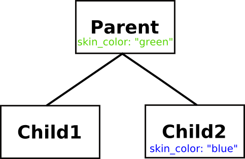

Earlier in this course, you learned some of the basics of object-oriented programming (OOP), which was first discussed in "Beginning Python." In this lesson, you'll learn more about OOP, and understand more deeply the object-oriented features that Python offers.
Object-oriented programming is commonly held to be based on three fundamental concepts (also the sections in this lesson):
Encapsulation is the idea that the only way to access or change the data inside an object is by calling its methods. This idea has never really gained much ground in the Python world, and it is normally considered acceptable to both read and set an object's attributes from anywhere in a program.
Occasionally, you may find that storing new information in an object requires you to perform other calculations. While it might seem that a method call would be necessary in such circumstances, you can instead choose to perform the calculations by implementing a property, which we will show how to do later.
You have already used Python's inheritance features, so you know something about them. In programming, when a child class inherits from a parent class, that is referred to as subclassing. In Python, we say that the subclass (child) inherits from a base class (parent). To the programmer, it appears that the subclass has all of the same attributes (including methods) as the base class—though in fact this is actually implemented by the interpreter following a well-defined method resolution order (MRO) to locate attributes. Run an example in an interactive interpreter window as follows to clarify this.
>>> class Parent:
... skin_color = "green"
...
>>> class Child1(Parent):
... pass
...
>>> class Child2(Parent):
... skin_color = "blue"
...
>>> Child1.skin_color
'green'
>>> Child2.skin_color
'blue'
>>> Child2.__mro__
(<class '__main__.Child2'>, <class '__main__.Parent'>, <class 'object'>)
>>> object
<class 'object'>
>>> dir(object)
['__class__', '__delattr__', '__dir__', '__doc__', '__eq__', '__format__', '__ge__',
'__getattribute__', '__getstate__', '__gt__', '__hash__', '__init__', '__init_subclass__',
'__le__', '__lt__', '__ne__', '__new__', '__reduce__', '__reduce_ex__', '__repr__',
'__setattr__', '__sizeof__', '__str__', '__subclasshook__']
>>> dir(Parent)
['__class__', '__delattr__', '__dict__', '__dir__', '__doc__', '__eq__', '__firstlineno__',
'__format__', '__ge__', '__getattribute__', '__getstate__', '__gt__', '__hash__', '__init__',
'__init_subclass__', '__le__', '__lt__', '__module__', '__ne__', '__new__', '__reduce__',
'__reduce_ex__', '__repr__', '__setattr__', '__sizeof__', '__static_attributes__', '__str__',
'__subclasshook__', '__weakref__', 'skin_color']
>>> object.__dict__
mappingproxy({...})
>>> Parent.__dict__
mappingproxy({'__module__': '__main__', '__firstlineno__': 1, 'skin_color': 'green',
'__static_attributes__': (), '__dict__': <attribute '__dict__' of 'Parent' objects>,
'__weakref__': <attribute '__weakref__' of 'Parent' objects>, '__doc__': None})
>>> sorted(list(Parent.__dict__))
['__dict__', '__doc__', '__firstlineno__', '__module__', '__static_attributes__', '__weakref__', 'skin_color']
>>> sorted(list(Child1.__dict__))
['__doc__', '__firstlineno__', '__module__', '__static_attributes__']
>>> sorted(list(Child2.__dict__))
['__doc__', '__firstlineno__', '__module__', '__static_attributes__', 'skin_color']
>>> sorted(list(object.__dict__))
['__class__', '__delattr__', '__dir__', '__doc__', '__eq__', '__format__', '__ge__',
'__getattribute__', '__getstate__', '__gt__', '__hash__', '__init__', '__init_subclass__',
'__le__', '__lt__', '__ne__', '__new__', '__reduce__', '__reduce_ex__', '__repr__',
'__setattr__', '__sizeof__', '__str__', '__subclasshook__']
>>>
| Note | Some of the lines above have been wrapped for your reading convenience. |
| Modern Python | The dir() and sorted(__dict__) outputs above are from current
Python (3.14) and differ from the original course material. Notably, dir(object) now
includes __dir__, __getstate__, and __init_subclass__.
User-defined classes now also gain __firstlineno__ and __static_attributes__
in their __dict__. The object.__dict__ and Parent.__dict__ are
shown as mappingproxy (the old name was dict_proxy); the behaviour is
the same. |
In the example above, the value of Child1.skin_color is "green," because if the interpreter doesn't find the attribute it is looking for in the class it will next look in its base class. The Child2 class sets its own skin_color, however, and so when the interpreter looks for a "skin_color" attribute in the class's namespace, it finds it without any need to look in the parent class. We say that the Child2 class overrides the base class's skin color.

The diagram above shows the inheritance relationship between Parent, Child1, and Child2, which makes it obvious why Child1 has green skin. You can see the MRO of a class by examining its __mro__ attribute, as is shown in the interactive session. This tuple is a list of the class's base classes. You will observe that although it is never explicitly mentioned in any of the class definitions, Python classes ultimately inherit from a built-in class called object, and that much of the behavior of your classes is actually defined in that class.
| Note | Technically, the built-in classes are usually referred to as types. There are a few differences between those types and the classes you define yourself, but you don't need to be concerned about them just yet. |
You can also see that the names that have been defined locally to a class generally live in its __dict__. To a first approximation, the output of dir() on a class will be its __dict__ plus the __dict__s of all its base classes. That is because the class's __dict__ is where the class attributes are stored.
You might also notice that classes don't actually use a Python dict as their __dict__, but instead have a specialized object called a mappingproxy. This is a "lightweight" dict, designed to operate lookups as quickly as possible because name lookups are so frequent in Python.
One other term to remember: the base class that is the immediate parent of a class is often called its superclass.
Python implements multiple inheritance: you can specify more than one base class in a class definition, and your class will inherit the characteristics of all its base classes. This allows you to define classes called mix-in classes that you can use specifically to add behaviors to other classes.
This naturally gives rise to the question "what happens if more than one of the base classes defines the same attribute—which value does my class inherit?" As with so many questions about Python, the interactive interpreter is your friend. Let's use it to find out.
>>> class Mother:
... hair_color = "blonde"
... temperament = "placid"
...
>>> class Father:
... hair_color = "ginger"
... curiosity = "high"
...
>>> class Daughter(Mother, Father):
... pass
...
>>> class Son(Father, Mother):
... pass
...
>>> Daughter.hair_color
'blonde'
>>> Son.hair_color
'ginger'
>>> Daughter.temperament, Daughter.curiosity
('placid', 'high')
>>> Son.temperament, Son.curiosity
('placid', 'high')
>>>
The Daughter class inherits the Mother class's hair_color because the base classes are searched left-to-right. Similarly the Son class inherits the Father class's hair_color. However, both children inherit temperament from the Mother class and curiosity from the Father class, because only one base class defines each of these attributes. Inheritance of methods works in exactly the same way: in resolving a method or attribute name, the interpreter searches the base classes (and their subclasses, and so on) starting from the left—all subclasses of the first base class are considered before the second base class.
One of the concepts that Python supports very well is Subtype Polymorphism, known less formally as polymorphism. Polymorphism gives you the ability to write code without concerning yourself about the types of the data it is dealing with.
Early in this series of classes, you used Python to perform some basic math on integers, and eventually expanded your knowledge to understand that you could add (or more properly "concatenate") strings and various iterators together. Use the interactive interpreter to remind yourself again about this interesting property of Python.
>>> def add(x, y):
... return x+y
...
>>> add(3, 5)
8
>>> add("big", "string")
'bigstring'
>>> add([1, 2, 4], [8, 16])
[1, 2, 4, 8, 16]
>>> add((1, 1, 1), (2, 2, 2))
(1, 1, 1, 2, 2, 2)
>>>
The above function demonstrates that in Python, numbers, strings, lists and tuples are polymorphic with respect to addition. As long as both arguments are of the same type, you can add them together.
Did you ever stop to wonder about how the + and * operators "know" how to do the correct operations on the operands on either side? If you think about it, the computer has to perform quite different operations to add two strings and two numbers. This polymorphism is achieved by examining and calling methods of the operands.
When the interpreter has to evaluate the expression a + b, it first tries to evaluate a.__add__(b). This may or may not be possible: the a object may not have an __add__() method, or the method might return NotImplemented when called with b as an argument. In either of these cases, the interpreter falls back to trying to call b.__radd__(a) to evaluate the expression. If this is impossible (again, either because b has no __radd__() method, or because that method raises NotImplemented when called with a as its argument) the interpreter raises a TypeError exception.
One more thing before we explore actual usage—in an earlier lesson, we wrote code to determine a child's hair color. Our tests checked the response of an expected hair() method. This was yet another example of polymorphism.
Let's create a working example that does use polymorphism. You've got a farm and you need to list all the animals, the sounds they make, and whether they have wings. Create test_animal_farm.py as shown:
'''
Test the animal_farm animals
'''
import unittest
from animal_farm import Animal, Pig, Dog, Chicken
class Test(unittest.TestCase):
def test_base_animal_class(self):
"Tests the basics of the Animal class."
animal = Animal("Orwell")
self.assertRaises(NotImplementedError, animal.sound)
self.assertFalse(animal.has_wings())
def test_pig(self):
"Tests the inhabitants of the farm"
pig = Pig("Napoleon")
self.assertEqual(pig.sound(), "oink!")
self.assertFalse(pig.has_wings())
def test_dog(self):
dog = Dog("Bluebell")
self.assertEqual(dog.sound(), "woof!")
self.assertFalse(dog.has_wings())
def test_chicken(self):
chicken = Chicken("Kulak")
self.assertEqual(chicken.sound(), "bok bok!")
self.assertTrue(chicken.has_wings())
if __name__ == "__main__":
unittest.main()
The tests first determine that the base animal class works as expected. Then the individual animal classes are tested to make sure that they return the right sound and the right answer to the wing question.
Note that the Animal class's sound() method raises a NotImplementedError. This is a reminder that we assume all farm animals make sound, and the developer writing classes representing the beasts needs to implement this method. In programming parlance, the sound() method is called an abstract method. It doesn't do anything besides inform developers looking to use the Animal class what they need to do to make the class function correctly, and requires subclasses to implement the method.
The has_wings() method is different, assuming that most of the farm animals will by default not have wings, and so provides a default return of "False."
Now we need to create some animal classes to match the tests. Create animal_farm.py as shown:
class Animal(object):
def __init__(self, name):
self.name = name
def sound(self):
raise NotImplementedError("Animals need a sound method")
def has_wings(self):
return False
class Pig(Animal):
def sound(self):
return "oink!"
class Dog(Animal):
def sound(self):
return "woof!"
class Chicken(Animal):
def sound(self):
return "bok bok!"
def has_wings(self):
return True
| Modern Python | In Python 3, all classes automatically inherit from object, so
class Animal(object): and class Animal: are equivalent. The explicit
(object) was necessary in Python 2 to opt into "new-style" classes; in Python 3 the
idiomatic form is simply class Animal:. The code above is preserved verbatim from the
original course. |
Save the files and run the tests, and you have a working example of polymorphism.
.... ---------------------------------------------------------------------- Ran 4 tests in 0.000s OK
While tests are good to have, it's nice to see the actual application working too! Let's try this out on the command line:
>>> from animal_farm import *
>>> animal = Animal('Mystery Meat')
>>> animal.name
'Mystery Meat'
>>> animal.sound()
Traceback (most recent call last):
File "<stdin>", line 1, in <module>
animal.sound()
~~~~~~~~~~~~^^
File "animal_farm.py", line 7, in sound
raise NotImplementedError("Animals need a sound method")
NotImplementedError: Animals need a sound method
>>> dog = Dog('Rover')
>>> dog.name
'Rover'
>>> dog.sound()
'woof!'
| Modern Python | The traceback above reflects current Python (3.14), which adds a caret line
(~~~~~~~~~~~~^^) pointing to the offending call. The original 3.1 traceback
omitted that line. |
You saw earlier how the definition of an attribute in a class will be chosen in preference to the definition of the same attribute in a base class. This is due to the method resolution order adopted in Python. When searching for an attribute (including a method), the interpreter first looks in the instance's namespace; next it looks in the namespace of the instance's class; after that it looks in the base classes one by one, raising an AttributeError exception if the attribute is not found.
If a class defines a method of the same name as a method of one of its base classes, it is said to override the method of the base class. So in the example above, the Chicken class's has_wings() method overrides the Animal class's has_wings() method, by providing its own implementation.
Sometimes, however, the subclass needs to use its superclass's method as a part of implementing its own method, and Python has a special feature to easily let you refer to a class's superclass—the super() function. You will see it in use in the next example, where we start by defining a Car class and then extend it by subclassing. The Toyota subclass needs an extra argument to its __init__() method, but it also needs to go through the usual initialization for cars. Create test_extend.py as shown:
'''
test_extend.py: verify that Ford successfully
extends the Car. __init__() method
'''
import unittest
from extend import Car, Ford, Toyota
class TestCars(unittest.TestCase):
def test_Toyota(self):
car1 = Car("red", 2000)
car2 = Toyota("red", 2000, "Corolla")
self.assertEqual(car1.color, car2.color)
self.assertEqual(car1.cc, car2.cc)
self.assertEqual(car2.model, "Corolla")
def test_Ford(self):
car1 = Car("red", 2000)
car2 = Ford("red", 2000, "Taurus")
self.assertEqual(car1.color, car2.color)
self.assertEqual(car1.cc, car2.cc)
self.assertEqual(car2.model, "Taurus")
if __name__ == '__main__':
unittest.main()
The idea is that Toyotas are cars and Fords are cars, so they should use the Car.__init__() method to do the initialization that they have in common to set the instance variables. Observe that both the Toyota and Ford classes take an extra argument when you create a new instance, so clearly Car.__init__() alone is not going to suffice. The two subclasses are quite similar, differing only in the way they call their superclass's __init__() method. Now, create the extend.py program as shown:
'''
extend.py: demonstrate how to extend a superclass method.
'''
class Car:
def __init__(self, color, cc):
self.color = color
self.cc = cc
class Toyota(Car):
def __init__(self, color, cc, model):
Car.__init__(self, color, cc)
self.model = model
class Ford(Car):
def __init__(self, color, cc, model):
super().__init__(color, cc)
self.model = model
Note that the Toyota class's __init__() method calls Car.__init__() directly. Since Car is a class and not an instance, it is necessary to provide an explicit instance to the call.
The Ford.__init__() method, however, uses the built-in super() function. This returns a special object that delegates the calls to the parent class without needing an instance to be provided. If the tests all pass, that demonstrates that the two classes are equivalent in operation.
| Note | In version 2.7 of Python, super() has a different syntax (with arguments). |
| Modern Python | In Python 3, super() with no arguments is the standard form, as used
in Ford.__init__() above. The zero-argument form uses a cell variable to find the
enclosing class automatically, so there is no need to name it explicitly. The
Toyota approach—calling Car.__init__(self, ...) directly—still
works, but is less flexible in the presence of multiple inheritance. |
.. ---------------------------------------------------------------------- Ran 2 tests in 0.000s OK
So both the subclasses, in their own way, extend the Car.__init__() method.
After this more extended look at Python's object-oriented features, you are better prepared to deploy the language to solve real-world problems. In the next lesson, we'll take a look at the features the language has for reading and storing data in compact binary formats.